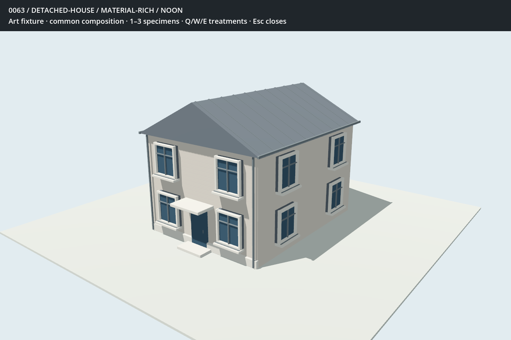
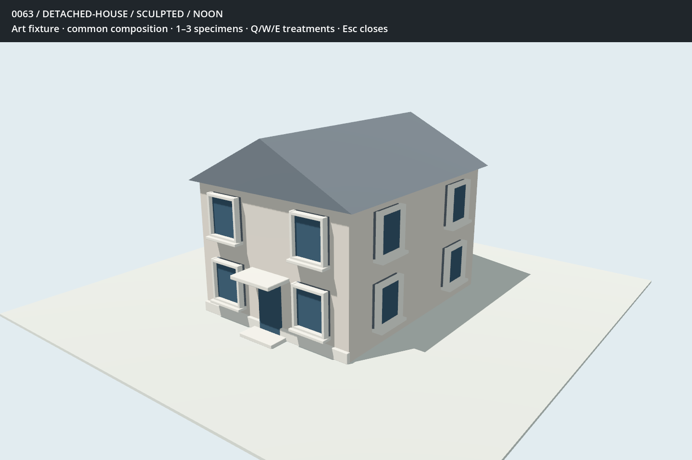
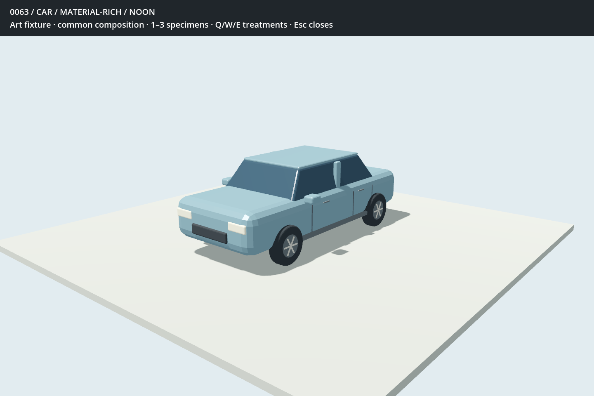
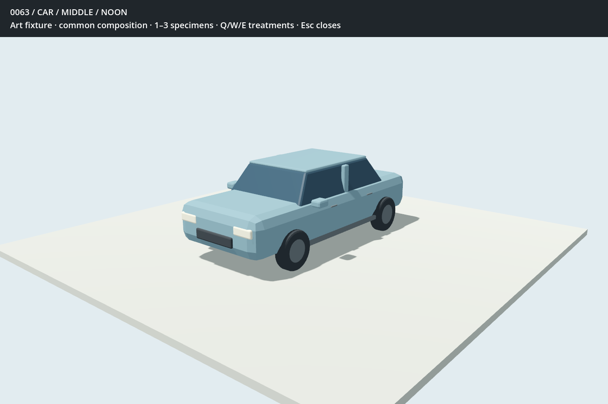

BOROUGH / 0063 / COMPARISON KIT v1One specimen, three treatments
First trio: detached house, residential tower and car. Each keeps its composition, dimensions, openings, palette, camera and noon lighting across treatments. Click any image for full size.
Initial executions for review—not a chosen style or the completed kit. Material-rich adds small joinery and surface relief; sculpted concentrates on broad frames and masses; middle keeps selective depth and quieter surfaces.
Detached House
Material Rich
14,024 triangles · 5 mesh surfacesSculpted
4,868 triangles · 4 mesh surfacesMiddle6,056 triangles · 5 mesh surfaces Car
Material Rich
11,144 triangles · 7 mesh surfacesSculpted3,736 triangles · 5 mesh surfacesMiddle
4,384 triangles · 5 mesh surfaces These isolated art specimens have no simulated occupancy or population. Counts describe imported geometry, not rendering time. Street context, close views, motion, night lighting and live-state checks remain further work.